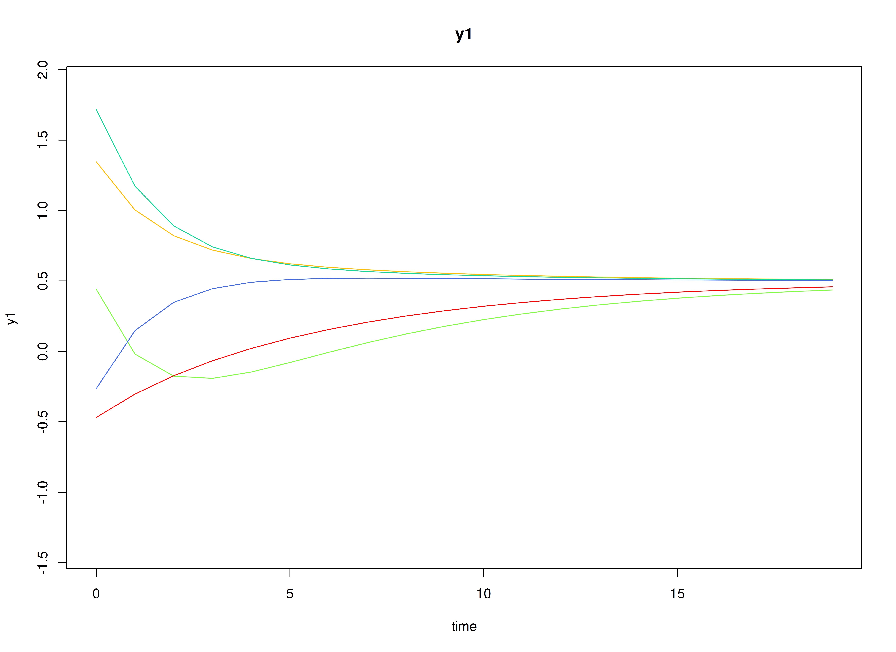
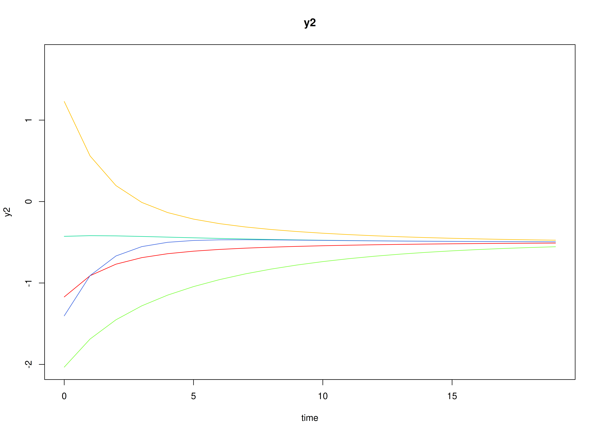

Fit the Discrete-Time Vector Autoregressive Model By ID (Stable Reciprocal Regulation | 100 Measurement Occasions)
Ivan Jacob Agaloos Pesigan
2025-10-15
Source:vignettes/stable-reciprocal-regulation-100.Rmd
stable-reciprocal-regulation-100.RmdDynamics Description
The Stable Reciprocal Regulation process represents a bivariate dynamic system in which two latent psychological constructs—such as positive and negative affect—mutually influence each other over time. Each construct shows moderate self-regulation (autoregressive effects) and mild opposing cross-effects, reflecting an equilibrium-seeking mechanism characteristic of emotional balance.
Individuals vary in their self-regulatory tendencies and in the strength of these antagonistic couplings. At the population level, the transition matrix indicates that increases in one construct are followed by slight decreases in the other, producing a stable, damped oscillatory pattern around individual equilibrium points. The process noise covariance allows for small correlated disturbances, while measurement errors are assumed to be minimal and symmetric across indicators.
This dynamic pattern captures a psychologically plausible process of reciprocal inhibition—where short-term fluctuations in one system component (e.g., positive affect) are naturally counteracted by adjustments in its counterpart (e.g., negative affect), leading to emotional homeostasis over time.
Model
The measurement model is given by where , , and are random variables and , , and are model parameters. represents a vector of observed random variables, a vector of latent random variables, and a vector of random measurement errors, at time and individual . denotes a matrix of factor loadings, and the covariance matrix of for individual . In this model, is an identity matrix and is a symmetric matrix.
The dynamic structure is given by where , , and are random variables, and , and are model parameters. Here, is a vector of latent variables at time and individual , represents a vector of latent variables at time and individual , and represents a vector of dynamic noise at time and individual . is a matrix of autoregression and cross regression coefficients for individual , and the covariance matrix of for individual . In this model, is a symmetric matrix.
Data Generation
Notation
Let be the number of time points and be the number of individuals.
Let the measurement model intecept vector be normally distributed with the following means
and covariance matrix
Let the factor loadings matrix be given by
Let the measurement error covariance matrix be given by
Let the initial condition be given by
and are functions of and .
Let the transition matrix be normally distributed with the following means
and covariance matrix
Let the intercept vector be fixed to a zero vector.
The SimNuN and SimBetaN functions from the
simStateSpace package generates random intercept vectors
and transition matrices from the multivariate normal distribution. Note
that the SimBetaN function generates transition matrices
that are weakly stationary with an option to set lower and upper
bounds.
Let the dynamic process noise be given by
R Function Arguments
n
#> [1] 100
time
#> [1] 10100
burnin
#> [1] 10000
# first mu0 in the list of length n
mu0[[1]]
#> [1] 0 0
# first sigma0 in the list of length n
sigma0[[1]]
#> [,1] [,2]
#> [1,] 0.3230830 -0.1220195
#> [2,] -0.1220195 0.5527409
# first sigma0_l in the list of length n
sigma0_l[[1]] # sigma0_l <- t(chol(sigma0))
#> [,1] [,2]
#> [1,] 0.5684039 0.0000000
#> [2,] -0.2146704 0.7117988
alpha
#> [[1]]
#> [1] 0 0
# first beta in the list of length n
beta[[1]]
#> [,1] [,2]
#> [1,] 0.6248343 0.02174497
#> [2,] -0.1054576 0.79427204
# first psi in the list of length n
psi[[1]]
#> [,1] [,2]
#> [1,] 0.20 -0.05
#> [2,] -0.05 0.18
psi_l[[1]] # psi_l <- t(chol(psi))
#> [,1] [,2]
#> [1,] 0.4472136 0.0000000
#> [2,] -0.1118034 0.4092676
# first nu in the list of length n
nu[[1]]
#> [1] 0.4832070 -0.7620639
lambda
#> [[1]]
#> [,1] [,2]
#> [1,] 1 0
#> [2,] 0 1
# first theta in the list of length n
theta[[1]]
#> [,1] [,2]
#> [1,] 0.5 0.0
#> [2,] 0.0 0.5
theta_l[[1]] # theta_l <- t(chol(theta))
#> [,1] [,2]
#> [1,] 0.7071068 0.0000000
#> [2,] 0.0000000 0.7071068Visualizing the Dynamics Without Process Noise and Measurement Error (n = 5 with Different Initial Condition)

Using the SimSSMIVary Function from the
simStateSpace Package to Simulate Data
library(simStateSpace)
sim <- SimSSMIVary(
n = n,
time = time,
mu0 = mu0,
sigma0_l = sigma0_l,
alpha = alpha,
beta = beta,
psi_l = psi_l,
nu = nu,
lambda = lambda,
theta_l = theta_l
)
data <- as.data.frame(sim, burnin = burnin)
head(data)
#> id time y1 y2
#> 1 1 0 0.2789887 -0.8588146
#> 2 1 1 1.7403454 -2.6296446
#> 3 1 2 1.6616097 -2.8627551
#> 4 1 3 1.5364391 -2.8515134
#> 5 1 4 1.3548295 -3.3594792
#> 6 1 5 -1.4337840 -1.2245788
plot(sim, burnin = burnin)

Model Fitting
The FitDTVARMxID function fits a DT-VAR model on each
individual
.
To set up the estimation, we first provide starting
values for each parameter matrix.
Autoregressive Parameters (beta)
The autoregressive coefficient matrix is given starting values.
beta_values <- betaLDL′-parameterized covariance matrices
Covariances such as psi and theta are
estimated using the LDL′ decomposition of a positive definite covariance
matrix. The decomposition expresses a covariance matrix
as
where:
-
is a strictly lower-triangular matrix of free parameters
(
l_mat_strict), - is the identity matrix,
- is an unconstrained vector,
- ensures strictly positive diagonal entries.
The LDL() function extracts this decomposition from a
positive definite covariance matrix. It returns:
-
d_uc: unconstrained diagonal parameters, equal toInvSoftplus(d_vec), -
d_vec: diagonal entries, equal toSoftplus(d_uc), -
l_mat_strict: the strictly lower-triangular factor.
sigma <- matrix(
data = c(1.0, 0.5, 0.5, 1.0),
nrow = 2,
ncol = 2
)
ldl_sigma <- LDL(sigma)
d_uc <- ldl_sigma$d_uc
l_mat_strict <- ldl_sigma$l_mat_strict
I <- diag(2)
sigma_reconstructed <- (l_mat_strict + I) %*% diag(log1p(exp(d_uc)), 2) %*% t(l_mat_strict + I)
sigma_reconstructed
#> [,1] [,2]
#> [1,] 1.0 0.5
#> [2,] 0.5 1.0Process Noise Covariance Matrix (psi)
Starting values for the process noise covariance matrix are given below, with corresponding LDL′ parameters.
psi_values <- psi[[1]]
ldl_psi_values <- LDL(psi_values)
psi_d_values <- ldl_psi_values$d_uc
psi_l_values <- ldl_psi_values$l_mat_strict
psi_d_values
#> [1] -1.507772 -1.701853
psi_l_values
#> [,1] [,2]
#> [1,] 0.00 0
#> [2,] -0.25 0Measurement Error Covariance Matrix (theta)
Starting values for the measurement error covariance matrix are given below, with corresponding LDL′ parameters.
theta_values <- theta[[1]]
ldl_theta_values <- LDL(theta_values)
theta_d_values <- ldl_theta_values$d_uc
theta_l_values <- ldl_theta_values$l_mat_strict
theta_d_values
#> [1] -0.4327521 -0.4327521
theta_l_values
#> [,1] [,2]
#> [1,] 0 0
#> [2,] 0 0Initial mean vector (mu_0) and covariance matrix
(sigma_0)
The initial mean vector
and covariance matrix
are fixed using mu0 and sigma0.
mu0_values <- mu0
FitDTVARMxID
fit <- FitDTVARMxID(
data = data,
observed = c("y1", "y2"),
id = "id",
beta_values = beta_values,
psi_d_values = psi_d_values,
psi_l_values = psi_l_values,
nu_values = nu_values,
theta_d_values = theta_d_values,
mu0_values = mu0_values,
sigma0_d_values = sigma0_d_values,
sigma0_l_values = sigma0_l_values,
ncores = parallel::detectCores()
)Parameter estimates
summary(fit, converged = FALSE)
#> beta_1_1 beta_2_1 beta_1_2 beta_2_2
#> FitDTVARMxID_DTVAR_ID1.Rds 0.06537796 1.145635840 -0.318535087 1.335754945
#> FitDTVARMxID_DTVAR_ID2.Rds 0.26690901 -0.144476178 -0.397390478 0.821824160
#> FitDTVARMxID_DTVAR_ID3.Rds 0.61866602 0.559291320 -0.242451620 0.212820751
#> FitDTVARMxID_DTVAR_ID4.Rds 2.08510086 -2.114939951 1.084710337 -0.977982624
#> FitDTVARMxID_DTVAR_ID5.Rds 0.90428828 -0.669103857 0.201622801 0.176836002
#> FitDTVARMxID_DTVAR_ID6.Rds 0.34788175 -0.090402800 0.267087657 0.728685080
#> FitDTVARMxID_DTVAR_ID7.Rds 0.41254008 -1.407032563 -0.167261947 0.188510083
#> FitDTVARMxID_DTVAR_ID8.Rds 0.72417621 -0.094801911 -0.262626316 0.673934397
#> FitDTVARMxID_DTVAR_ID10.Rds 0.30044646 0.642963797 -0.747871783 1.381617457
#> FitDTVARMxID_DTVAR_ID11.Rds 1.46536606 -0.851376303 0.417276408 0.277953681
#> FitDTVARMxID_DTVAR_ID12.Rds 0.57666042 -0.437651455 -0.207368138 0.001518536
#> FitDTVARMxID_DTVAR_ID13.Rds 0.18331402 -0.034292883 -0.277845238 0.696544599
#> FitDTVARMxID_DTVAR_ID14.Rds 0.61488841 -0.941579933 -0.240052736 -0.064454663
#> FitDTVARMxID_DTVAR_ID16.Rds 0.88558597 0.187166292 -0.127085497 0.003409701
#> FitDTVARMxID_DTVAR_ID17.Rds 0.30874649 0.028179878 -0.075861073 0.875933087
#> FitDTVARMxID_DTVAR_ID18.Rds 1.13816345 -0.235810241 0.188842033 0.771869144
#> FitDTVARMxID_DTVAR_ID21.Rds 0.45340923 -0.223657861 -0.003347313 0.699109080
#> FitDTVARMxID_DTVAR_ID22.Rds 0.79838807 -0.061338119 -0.034612193 0.759780752
#> FitDTVARMxID_DTVAR_ID23.Rds 0.78269807 -0.002507809 -0.329437504 0.779203798
#> FitDTVARMxID_DTVAR_ID24.Rds 0.82120250 -0.123541457 -0.544939105 0.099148160
#> FitDTVARMxID_DTVAR_ID25.Rds 0.73618203 0.016458112 0.190551150 0.521990996
#> FitDTVARMxID_DTVAR_ID26.Rds 0.71624951 0.102160808 -0.159039705 0.410221331
#> FitDTVARMxID_DTVAR_ID27.Rds 0.60105627 0.200847046 -0.729641148 1.240683855
#> FitDTVARMxID_DTVAR_ID28.Rds 0.82243659 -0.427172241 0.032796173 0.088985557
#> FitDTVARMxID_DTVAR_ID29.Rds 0.30758226 -0.331004141 -0.129873068 0.274582295
#> FitDTVARMxID_DTVAR_ID30.Rds -0.30764144 -0.581337176 -0.308258248 0.019998260
#> FitDTVARMxID_DTVAR_ID31.Rds 0.64860403 0.097849140 -0.205700467 0.781133788
#> FitDTVARMxID_DTVAR_ID32.Rds 0.75627369 -0.533260871 0.039770946 0.711501666
#> FitDTVARMxID_DTVAR_ID33.Rds 0.52286814 0.209248702 -0.333718069 0.855841942
#> FitDTVARMxID_DTVAR_ID34.Rds 0.55158691 -0.202453645 0.021158339 0.788094000
#> FitDTVARMxID_DTVAR_ID35.Rds 0.84072451 0.160729052 -0.130312620 0.467625943
#> FitDTVARMxID_DTVAR_ID36.Rds 0.26390552 -0.041731392 0.191614118 0.543152582
#> FitDTVARMxID_DTVAR_ID37.Rds 0.94184682 -1.134082183 0.024130193 0.085924073
#> FitDTVARMxID_DTVAR_ID38.Rds 0.25577337 -0.315590750 -0.736927303 0.658191846
#> FitDTVARMxID_DTVAR_ID39.Rds 0.69411991 0.359819132 -0.322893101 0.632450928
#> FitDTVARMxID_DTVAR_ID40.Rds 0.74650216 -0.502450027 -0.111443319 0.197283431
#> FitDTVARMxID_DTVAR_ID41.Rds 0.22600407 -0.052286744 -0.076549642 0.822016733
#> FitDTVARMxID_DTVAR_ID42.Rds 0.70087796 -0.107242672 -0.127404471 0.730034945
#> FitDTVARMxID_DTVAR_ID43.Rds 1.03804059 -0.488705876 0.248068150 0.302617226
#> FitDTVARMxID_DTVAR_ID44.Rds 0.71524838 0.053933022 -0.402377433 0.886513683
#> FitDTVARMxID_DTVAR_ID45.Rds 0.43180046 0.165970790 -0.252144411 1.034525574
#> FitDTVARMxID_DTVAR_ID46.Rds 1.29609876 -0.632676080 0.690040414 0.199001560
#> FitDTVARMxID_DTVAR_ID47.Rds 0.75351603 -0.061784969 -1.102543471 0.256536336
#> FitDTVARMxID_DTVAR_ID48.Rds 0.35875519 -0.612088994 -0.361131502 0.473642204
#> FitDTVARMxID_DTVAR_ID49.Rds 0.82808137 0.588404474 0.012126047 0.008760800
#> FitDTVARMxID_DTVAR_ID50.Rds 0.68201804 -1.049145856 -0.059355909 0.179193333
#> FitDTVARMxID_DTVAR_ID51.Rds 0.28593753 -0.167313143 -0.504193722 0.512846489
#> FitDTVARMxID_DTVAR_ID52.Rds 0.82368484 0.032115349 -1.054527627 0.910786263
#> FitDTVARMxID_DTVAR_ID53.Rds 0.15842306 -0.142538212 -0.269955715 0.748915806
#> FitDTVARMxID_DTVAR_ID54.Rds 0.94991403 -0.329520842 0.198639829 0.613323434
#> FitDTVARMxID_DTVAR_ID55.Rds 0.25665770 -0.193524157 -0.030325425 0.244556281
#> FitDTVARMxID_DTVAR_ID56.Rds 0.57739467 -0.236703813 -0.178673036 0.762757404
#> FitDTVARMxID_DTVAR_ID57.Rds 0.17009171 -0.227408091 0.070504220 0.456549712
#> FitDTVARMxID_DTVAR_ID58.Rds 0.56501363 0.056719246 0.165803183 0.790373464
#> FitDTVARMxID_DTVAR_ID59.Rds 1.01146227 -0.101572412 0.130377715 0.857663947
#> FitDTVARMxID_DTVAR_ID60.Rds 1.28905479 -1.046716326 0.273511022 0.339568168
#> FitDTVARMxID_DTVAR_ID61.Rds 0.95649305 0.084525407 0.093414044 0.341431211
#> FitDTVARMxID_DTVAR_ID62.Rds 1.53189631 -0.601511223 0.668303647 0.283500942
#> FitDTVARMxID_DTVAR_ID63.Rds 1.20619396 -0.154138137 0.576519449 0.666557995
#> FitDTVARMxID_DTVAR_ID64.Rds 0.33549903 -0.140876773 -0.076623395 0.387480012
#> FitDTVARMxID_DTVAR_ID65.Rds 0.33425785 -0.203709807 -0.208419352 0.661199994
#> FitDTVARMxID_DTVAR_ID66.Rds -1.00808059 0.920471115 -1.723899633 1.621102632
#> FitDTVARMxID_DTVAR_ID68.Rds 0.61500752 -0.196535019 -0.336173528 0.659019065
#> FitDTVARMxID_DTVAR_ID69.Rds 1.64867283 -1.473228768 0.807528349 -0.611831858
#> FitDTVARMxID_DTVAR_ID71.Rds 1.29939922 -0.879034421 1.292947978 -1.137586717
#> FitDTVARMxID_DTVAR_ID72.Rds 0.59636525 -0.342752804 -0.032966334 0.706662712
#> FitDTVARMxID_DTVAR_ID73.Rds 0.56143442 0.098755550 -0.076263468 0.256465092
#> FitDTVARMxID_DTVAR_ID74.Rds 0.09596358 -0.174999329 -0.091158092 0.369614893
#> FitDTVARMxID_DTVAR_ID75.Rds 1.08829478 -0.701563424 0.053413405 0.799733886
#> FitDTVARMxID_DTVAR_ID76.Rds 0.47838258 0.342139482 -0.421505807 1.150213733
#> FitDTVARMxID_DTVAR_ID77.Rds 0.44883377 -0.072421848 -0.590052110 0.802235817
#> FitDTVARMxID_DTVAR_ID78.Rds 0.89808446 -0.299302532 -0.121181260 0.230261480
#> FitDTVARMxID_DTVAR_ID79.Rds 0.55933625 0.166520565 -0.253988333 0.981111116
#> FitDTVARMxID_DTVAR_ID80.Rds 0.27397036 -0.170907774 -0.411634292 0.797843337
#> FitDTVARMxID_DTVAR_ID81.Rds 0.52173621 0.498711077 -0.275687089 1.082326260
#> FitDTVARMxID_DTVAR_ID82.Rds 0.78665306 -0.556803489 -0.067749612 0.377560675
#> FitDTVARMxID_DTVAR_ID83.Rds 0.95803594 -0.152269996 0.070986210 0.172416276
#> FitDTVARMxID_DTVAR_ID84.Rds 0.33536019 0.215392741 -0.206974356 0.903990863
#> FitDTVARMxID_DTVAR_ID85.Rds 0.56551875 -0.032034837 -0.217266187 0.878023627
#> FitDTVARMxID_DTVAR_ID86.Rds 0.87945979 -0.060813162 -0.112920244 0.225024294
#> FitDTVARMxID_DTVAR_ID87.Rds 0.72160750 -0.163147934 -0.173263318 0.415411007
#> FitDTVARMxID_DTVAR_ID88.Rds 0.90109312 -0.062623331 -0.170569291 0.785381860
#> FitDTVARMxID_DTVAR_ID89.Rds 0.69262398 -0.498046892 -0.146924082 0.267536689
#> FitDTVARMxID_DTVAR_ID90.Rds 0.64020642 0.066991303 -0.388713663 0.808284654
#> FitDTVARMxID_DTVAR_ID91.Rds 0.42858368 -0.351128731 -0.181324778 0.291612147
#> FitDTVARMxID_DTVAR_ID92.Rds 0.95278464 -0.091185409 0.744756878 0.509928226
#> FitDTVARMxID_DTVAR_ID93.Rds 0.51688629 -0.278447885 0.006992676 0.826484998
#> FitDTVARMxID_DTVAR_ID94.Rds 0.97368206 -0.163211726 0.062745928 0.907702863
#> FitDTVARMxID_DTVAR_ID95.Rds 0.55960401 -0.044627198 0.489130736 0.763437863
#> FitDTVARMxID_DTVAR_ID96.Rds 0.66738719 -0.564188692 -0.109730229 0.339505353
#> FitDTVARMxID_DTVAR_ID97.Rds 0.89003934 -0.449782373 0.119941311 0.706584337
#> FitDTVARMxID_DTVAR_ID98.Rds 1.30344440 -1.805640824 0.225855239 0.083628311
#> FitDTVARMxID_DTVAR_ID99.Rds 0.58844134 -0.352219204 0.016665126 -0.204928276
#> FitDTVARMxID_DTVAR_ID100.Rds 0.60711442 0.043253582 0.012840609 0.160830523
#> nu_1_1 nu_2_1 psi_l_2_1 psi_d_1_1
#> FitDTVARMxID_DTVAR_ID1.Rds 0.632039698 -0.71764258 -1.601276719 -2.86020310
#> FitDTVARMxID_DTVAR_ID2.Rds 0.414655486 -0.75322068 0.110246646 -0.08541769
#> FitDTVARMxID_DTVAR_ID3.Rds 0.865952872 -0.37597104 7.069647280 -5.28478799
#> FitDTVARMxID_DTVAR_ID4.Rds 0.594308534 -0.77296538 -3.938445753 -21.18646998
#> FitDTVARMxID_DTVAR_ID5.Rds 0.568487726 -0.22598518 -0.318941336 -1.26608284
#> FitDTVARMxID_DTVAR_ID6.Rds 0.535852980 -0.76461688 -0.148569978 0.27025312
#> FitDTVARMxID_DTVAR_ID7.Rds 0.792573116 -0.43331832 -0.013365952 -2.08197848
#> FitDTVARMxID_DTVAR_ID8.Rds 0.551399488 -0.46427638 -0.108248775 -0.86330082
#> FitDTVARMxID_DTVAR_ID10.Rds 0.440727447 -0.21212652 -1.483722884 -4.20403590
#> FitDTVARMxID_DTVAR_ID11.Rds -0.424465793 0.69156208 -1.740872948 -2.60912069
#> FitDTVARMxID_DTVAR_ID12.Rds 0.751400387 -0.21434770 -1.090298713 -1.64654299
#> FitDTVARMxID_DTVAR_ID13.Rds 0.219022341 -1.03653979 -0.046090077 -0.25890953
#> FitDTVARMxID_DTVAR_ID14.Rds 0.801964787 -0.62181457 -0.365603995 -1.80453733
#> FitDTVARMxID_DTVAR_ID16.Rds 0.437389285 -1.24425711 0.380595268 -1.61323845
#> FitDTVARMxID_DTVAR_ID17.Rds 0.927097952 -1.27128668 -0.518549646 -0.42893547
#> FitDTVARMxID_DTVAR_ID18.Rds 0.198031347 -0.64785541 -1.462194626 -2.96630746
#> FitDTVARMxID_DTVAR_ID21.Rds 0.971113115 -1.10093066 -0.111851643 -0.25191002
#> FitDTVARMxID_DTVAR_ID22.Rds 0.716756516 -0.71085003 -0.052357206 -1.19887533
#> FitDTVARMxID_DTVAR_ID23.Rds 2.100307457 -0.60798619 -0.015017730 -0.63948629
#> FitDTVARMxID_DTVAR_ID24.Rds 0.125466730 -0.18957712 -1.632830353 -2.41021918
#> FitDTVARMxID_DTVAR_ID25.Rds 0.987837880 -0.90389971 -0.701476398 -1.08025907
#> FitDTVARMxID_DTVAR_ID26.Rds 0.616983030 -0.53633821 -0.514552261 -1.14093003
#> FitDTVARMxID_DTVAR_ID27.Rds 0.001783014 -0.18581261 -0.354068355 -1.71160759
#> FitDTVARMxID_DTVAR_ID28.Rds 0.355601619 -0.30293547 -1.019274542 -1.77101084
#> FitDTVARMxID_DTVAR_ID29.Rds 0.550833671 -0.98613686 -0.009639123 0.37031929
#> FitDTVARMxID_DTVAR_ID30.Rds 0.488328093 -0.38721300 -5.923482567 -3.91170949
#> FitDTVARMxID_DTVAR_ID31.Rds 0.271594483 -0.65361196 -0.255769675 -0.65876601
#> FitDTVARMxID_DTVAR_ID32.Rds 0.675070085 -0.87859061 -0.114882168 -2.12608274
#> FitDTVARMxID_DTVAR_ID33.Rds 0.401566291 -0.33149815 0.266793514 -2.88732236
#> FitDTVARMxID_DTVAR_ID34.Rds 0.865585068 -0.54763803 -0.112404362 -0.75191445
#> FitDTVARMxID_DTVAR_ID35.Rds 0.263723986 -0.49583972 -0.537338204 -1.74380916
#> FitDTVARMxID_DTVAR_ID36.Rds 0.196083255 -0.04291697 -0.936437933 -0.93279816
#> FitDTVARMxID_DTVAR_ID37.Rds 0.574001219 -0.17208288 -3.338663243 -2.76951659
#> FitDTVARMxID_DTVAR_ID38.Rds -0.039185874 0.42252027 0.088943184 -0.93226543
#> FitDTVARMxID_DTVAR_ID39.Rds 0.799898134 -0.58526249 -4.462450024 -4.72359329
#> FitDTVARMxID_DTVAR_ID40.Rds 0.268720424 -0.50723206 0.351787355 -2.30206508
#> FitDTVARMxID_DTVAR_ID41.Rds 0.467233866 -0.68023344 -0.137660547 -0.39789380
#> FitDTVARMxID_DTVAR_ID42.Rds 0.700364228 -0.54649007 -0.758461826 -1.77387479
#> FitDTVARMxID_DTVAR_ID43.Rds 1.283864180 -1.46781552 -1.523524430 -2.43416214
#> FitDTVARMxID_DTVAR_ID44.Rds 0.293346028 0.27375761 -0.593036736 -2.28859959
#> FitDTVARMxID_DTVAR_ID45.Rds 0.695245222 -0.54996830 -0.528531602 -0.91081791
#> FitDTVARMxID_DTVAR_ID46.Rds 0.787593857 -1.06121821 1.939019450 -5.15300104
#> FitDTVARMxID_DTVAR_ID47.Rds -0.028032510 0.04871341 -1.464661945 -2.64547026
#> FitDTVARMxID_DTVAR_ID48.Rds 0.231176052 -0.24750634 0.154903882 -1.09281702
#> FitDTVARMxID_DTVAR_ID49.Rds 0.402131191 -0.28460182 -3.739126288 -3.09445049
#> FitDTVARMxID_DTVAR_ID50.Rds 0.424248117 -0.49534186 -0.331361795 -1.70061843
#> FitDTVARMxID_DTVAR_ID51.Rds 0.636688298 -0.34735920 -0.038516513 0.24397789
#> FitDTVARMxID_DTVAR_ID52.Rds 0.444512598 -0.03678727 0.791313869 -3.07115336
#> FitDTVARMxID_DTVAR_ID53.Rds 0.646482617 -0.32120753 0.069297030 -0.03643411
#> FitDTVARMxID_DTVAR_ID54.Rds -0.052151241 0.01181320 -0.167476890 -1.90872690
#> FitDTVARMxID_DTVAR_ID55.Rds 0.487329370 -0.76570791 -0.329468084 0.21192064
#> FitDTVARMxID_DTVAR_ID56.Rds 0.609052027 -0.51276018 -0.142022430 -1.02894383
#> FitDTVARMxID_DTVAR_ID57.Rds 0.602864006 -0.88975655 -0.161959179 -0.07991037
#> FitDTVARMxID_DTVAR_ID58.Rds 0.747262446 -0.42851592 -1.554787315 -2.39552177
#> FitDTVARMxID_DTVAR_ID59.Rds 0.376456284 -0.36782467 -1.131658616 -2.33512534
#> FitDTVARMxID_DTVAR_ID60.Rds -0.252182586 -0.05013940 0.962525721 -4.86139918
#> FitDTVARMxID_DTVAR_ID61.Rds 1.342315996 -0.50664205 -0.429926685 -0.86616348
#> FitDTVARMxID_DTVAR_ID62.Rds 0.384720321 -0.81032883 -1.400674156 -2.98802684
#> FitDTVARMxID_DTVAR_ID63.Rds 0.084696658 -0.13086109 -0.493336457 -2.41942149
#> FitDTVARMxID_DTVAR_ID64.Rds 0.595810944 -1.05039558 -0.252523067 0.26711659
#> FitDTVARMxID_DTVAR_ID65.Rds 0.171573782 -0.42073261 -0.136040723 -0.93903013
#> FitDTVARMxID_DTVAR_ID66.Rds 0.274910074 0.02222594 2.694183890 -5.00338542
#> FitDTVARMxID_DTVAR_ID68.Rds 0.806343066 -0.98956738 -0.506800035 -0.92035511
#> FitDTVARMxID_DTVAR_ID69.Rds 1.021405777 -0.90244680 0.578781105 -3.30403254
#> FitDTVARMxID_DTVAR_ID71.Rds 0.332614870 -0.38772441 0.179936034 -1.88202578
#> FitDTVARMxID_DTVAR_ID72.Rds 0.318320832 0.42530175 0.193600352 -1.51175133
#> FitDTVARMxID_DTVAR_ID73.Rds 0.688245438 -0.37668700 -0.287612783 0.08877424
#> FitDTVARMxID_DTVAR_ID74.Rds 0.038594284 -0.07287049 -0.027422422 0.55376213
#> FitDTVARMxID_DTVAR_ID75.Rds 0.606881578 0.31852123 -2.633245750 -3.20026343
#> FitDTVARMxID_DTVAR_ID76.Rds 0.818763372 -0.89479614 -0.237472797 -1.75146888
#> FitDTVARMxID_DTVAR_ID77.Rds 0.195448000 -0.33059338 0.055263469 0.21058715
#> FitDTVARMxID_DTVAR_ID78.Rds -0.167534648 -0.55008985 -0.551917281 -2.10879028
#> FitDTVARMxID_DTVAR_ID79.Rds 0.931191172 -0.57776653 -0.310936828 -1.00440314
#> FitDTVARMxID_DTVAR_ID80.Rds 0.307385823 -0.29853500 -0.049374396 -0.03516050
#> FitDTVARMxID_DTVAR_ID81.Rds -0.260322077 0.84410647 0.707112141 -4.28661116
#> FitDTVARMxID_DTVAR_ID82.Rds 1.337348622 -0.76515433 0.977730556 -2.27348105
#> FitDTVARMxID_DTVAR_ID83.Rds 0.397488953 -0.33718071 -2.983048057 -2.78776881
#> FitDTVARMxID_DTVAR_ID84.Rds 0.136419178 -0.14568997 -0.244554973 -1.21545019
#> FitDTVARMxID_DTVAR_ID85.Rds 0.652750550 -0.98546756 -0.041635470 -0.80237928
#> FitDTVARMxID_DTVAR_ID86.Rds 0.516292503 -0.38230423 0.254763153 -0.53272112
#> FitDTVARMxID_DTVAR_ID87.Rds 0.636090368 -0.74778375 0.135969807 -1.96234112
#> FitDTVARMxID_DTVAR_ID88.Rds -0.358091168 0.14331696 -0.913176154 -1.83657824
#> FitDTVARMxID_DTVAR_ID89.Rds 0.592405067 -0.11599726 -0.792428659 -1.33044627
#> FitDTVARMxID_DTVAR_ID90.Rds 0.850689879 -0.17848330 -0.244777239 -1.40059382
#> FitDTVARMxID_DTVAR_ID91.Rds 0.194767954 0.04633963 -0.126666560 -1.01079494
#> FitDTVARMxID_DTVAR_ID92.Rds 0.055707289 -0.33142502 -0.661518280 -1.18766897
#> FitDTVARMxID_DTVAR_ID93.Rds 0.569715924 -0.10470137 -0.263201769 -0.92359947
#> FitDTVARMxID_DTVAR_ID94.Rds 0.116712510 -0.21656452 -1.311209572 -2.78235332
#> FitDTVARMxID_DTVAR_ID95.Rds 1.031282584 -0.89404711 -0.481014789 -0.77589526
#> FitDTVARMxID_DTVAR_ID96.Rds 1.007117414 -0.44206383 0.406689332 -1.40058735
#> FitDTVARMxID_DTVAR_ID97.Rds 0.778551087 -0.32590379 -0.009660593 -2.83874527
#> FitDTVARMxID_DTVAR_ID98.Rds 0.872916076 -0.59345439 -6.387625594 -5.14067282
#> FitDTVARMxID_DTVAR_ID99.Rds 0.646939387 -1.07788162 -1.179453152 -1.40858799
#> FitDTVARMxID_DTVAR_ID100.Rds -0.027080276 -0.66629016 -0.517753597 -0.81161096
#> psi_d_2_1 theta_d_1_1 theta_d_2_1
#> FitDTVARMxID_DTVAR_ID1.Rds -23.116598281 0.09815432 -0.18736118
#> FitDTVARMxID_DTVAR_ID2.Rds -1.453365660 -15.47638373 -0.72286866
#> FitDTVARMxID_DTVAR_ID3.Rds -0.893016683 0.41951867 -12.53697821
#> FitDTVARMxID_DTVAR_ID4.Rds -2.559770059 -0.10927946 -0.45707813
#> FitDTVARMxID_DTVAR_ID5.Rds -21.064086013 -0.62677998 -0.46367804
#> FitDTVARMxID_DTVAR_ID6.Rds -1.581270708 -20.17032551 -0.54895011
#> FitDTVARMxID_DTVAR_ID7.Rds -0.178660688 -0.59260478 -18.43052629
#> FitDTVARMxID_DTVAR_ID8.Rds -1.713500954 -0.77083041 -0.49745505
#> FitDTVARMxID_DTVAR_ID10.Rds -20.514154694 -0.08743842 -0.25065833
#> FitDTVARMxID_DTVAR_ID11.Rds -25.291324194 -0.47668131 -0.47214030
#> FitDTVARMxID_DTVAR_ID12.Rds -19.854868306 -0.36878891 -0.62460635
#> FitDTVARMxID_DTVAR_ID13.Rds -0.930725131 -19.40258894 -0.92261437
#> FitDTVARMxID_DTVAR_ID14.Rds 0.088338774 -0.07442653 -20.52892448
#> FitDTVARMxID_DTVAR_ID16.Rds 0.290915282 -0.61005834 -17.30565021
#> FitDTVARMxID_DTVAR_ID17.Rds -1.850412453 -1.85036120 -0.47607508
#> FitDTVARMxID_DTVAR_ID18.Rds -25.426679592 0.01096947 -0.43369426
#> FitDTVARMxID_DTVAR_ID21.Rds -2.592674325 -3.24298178 -0.04448245
#> FitDTVARMxID_DTVAR_ID22.Rds -1.060761876 -0.50539608 -1.27902370
#> FitDTVARMxID_DTVAR_ID23.Rds -2.622850196 -0.98389445 -0.58481002
#> FitDTVARMxID_DTVAR_ID24.Rds -17.045736074 -0.28548168 -0.82596085
#> FitDTVARMxID_DTVAR_ID25.Rds -1.697954322 -0.43439694 -0.44450029
#> FitDTVARMxID_DTVAR_ID26.Rds -0.379275214 -0.19776022 -20.03488560
#> FitDTVARMxID_DTVAR_ID27.Rds -25.670401534 -0.28563553 -0.13941250
#> FitDTVARMxID_DTVAR_ID28.Rds -0.542988739 -0.72352463 -17.21488736
#> FitDTVARMxID_DTVAR_ID29.Rds 0.126786032 -17.90339379 -19.08769877
#> FitDTVARMxID_DTVAR_ID30.Rds -23.885324493 -0.03687687 -18.43233442
#> FitDTVARMxID_DTVAR_ID31.Rds -2.027065751 -0.48588302 -0.47604336
#> FitDTVARMxID_DTVAR_ID32.Rds -1.772222679 -0.69219087 -0.73297723
#> FitDTVARMxID_DTVAR_ID33.Rds -1.947155624 -0.51173830 -0.43687457
#> FitDTVARMxID_DTVAR_ID34.Rds -1.517590528 -0.27775502 -0.24465452
#> FitDTVARMxID_DTVAR_ID35.Rds -0.769836100 -0.80128421 -1.44037427
#> FitDTVARMxID_DTVAR_ID36.Rds -19.838745159 -0.37218919 -0.58067658
#> FitDTVARMxID_DTVAR_ID37.Rds -2.097106911 -0.17733249 -18.26111387
#> FitDTVARMxID_DTVAR_ID38.Rds -2.679937235 -0.63198206 -0.57481019
#> FitDTVARMxID_DTVAR_ID39.Rds -20.148987625 -0.02313323 -0.60666536
#> FitDTVARMxID_DTVAR_ID40.Rds 0.114534115 -0.24817815 -18.81434281
#> FitDTVARMxID_DTVAR_ID41.Rds -2.411666407 -2.17130002 -0.10996689
#> FitDTVARMxID_DTVAR_ID42.Rds -1.747270885 -0.87009632 -1.19546563
#> FitDTVARMxID_DTVAR_ID43.Rds -1.302145739 -0.01054454 -1.18806203
#> FitDTVARMxID_DTVAR_ID44.Rds -1.872895690 -0.02482476 -0.07578354
#> FitDTVARMxID_DTVAR_ID45.Rds -23.169440333 -0.99864524 -0.01665784
#> FitDTVARMxID_DTVAR_ID46.Rds -20.581747681 -0.22618772 0.04710619
#> FitDTVARMxID_DTVAR_ID47.Rds -17.751245121 -0.34587495 -0.42953460
#> FitDTVARMxID_DTVAR_ID48.Rds -0.908814163 -0.04949126 -1.34146261
#> FitDTVARMxID_DTVAR_ID49.Rds -23.586192448 0.02867923 -28.31615119
#> FitDTVARMxID_DTVAR_ID50.Rds -0.324033527 -0.69653166 -18.90260377
#> FitDTVARMxID_DTVAR_ID51.Rds -0.759710721 -19.00016361 -0.61115534
#> FitDTVARMxID_DTVAR_ID52.Rds -22.756163011 -0.68348871 -0.59894633
#> FitDTVARMxID_DTVAR_ID53.Rds -2.021943686 -18.21488156 -0.35401721
#> FitDTVARMxID_DTVAR_ID54.Rds -20.945358579 -0.56647981 -0.32852131
#> FitDTVARMxID_DTVAR_ID55.Rds -1.887002335 -15.18644485 -0.65493884
#> FitDTVARMxID_DTVAR_ID56.Rds -1.847349017 -0.60143849 -0.40825737
#> FitDTVARMxID_DTVAR_ID57.Rds -1.002319166 -18.74418886 -0.35938408
#> FitDTVARMxID_DTVAR_ID58.Rds -21.421935485 -0.24208621 -0.63838508
#> FitDTVARMxID_DTVAR_ID59.Rds -24.740137298 -0.33153069 -0.54111910
#> FitDTVARMxID_DTVAR_ID60.Rds -21.293478782 -0.09544139 -0.12419143
#> FitDTVARMxID_DTVAR_ID61.Rds -0.481422844 -0.45280743 -2.05622967
#> FitDTVARMxID_DTVAR_ID62.Rds -22.307772658 0.51313142 -0.20508472
#> FitDTVARMxID_DTVAR_ID63.Rds -8.171883895 -0.37176612 -0.06261782
#> FitDTVARMxID_DTVAR_ID64.Rds 0.198402079 -20.41577291 -22.34946357
#> FitDTVARMxID_DTVAR_ID65.Rds -0.330627747 -0.56554186 -1.58333625
#> FitDTVARMxID_DTVAR_ID66.Rds -17.628867243 -0.36089878 -0.14711566
#> FitDTVARMxID_DTVAR_ID68.Rds -1.582694215 -0.54917756 -0.50053234
#> FitDTVARMxID_DTVAR_ID69.Rds -20.665471080 0.35718407 -0.42773735
#> FitDTVARMxID_DTVAR_ID71.Rds -21.364314329 -0.71442024 -0.29657577
#> FitDTVARMxID_DTVAR_ID72.Rds -1.272321735 -0.64703699 -0.40337199
#> FitDTVARMxID_DTVAR_ID73.Rds -0.092206819 -3.24521237 -20.24558707
#> FitDTVARMxID_DTVAR_ID74.Rds -0.561199547 -16.54544194 -1.90406379
#> FitDTVARMxID_DTVAR_ID75.Rds -21.998455303 -0.32903843 -0.53396417
#> FitDTVARMxID_DTVAR_ID76.Rds -23.957344510 -0.26009796 -0.25551809
#> FitDTVARMxID_DTVAR_ID77.Rds -2.977027654 -2.66938264 -0.52435859
#> FitDTVARMxID_DTVAR_ID78.Rds -0.124587798 -0.75130537 -19.21035461
#> FitDTVARMxID_DTVAR_ID79.Rds -2.967632668 -0.89129545 -0.32511722
#> FitDTVARMxID_DTVAR_ID80.Rds -2.623354376 -19.16155012 -0.48452285
#> FitDTVARMxID_DTVAR_ID81.Rds -21.503866263 -0.04113617 0.27792377
#> FitDTVARMxID_DTVAR_ID82.Rds -0.472564574 -0.19255120 -1.04190106
#> FitDTVARMxID_DTVAR_ID83.Rds -20.864754056 -0.26910402 -2.12074759
#> FitDTVARMxID_DTVAR_ID84.Rds -1.474034493 -0.84981283 -0.66403347
#> FitDTVARMxID_DTVAR_ID85.Rds -2.826950320 -1.07789520 -0.68151549
#> FitDTVARMxID_DTVAR_ID86.Rds 0.004811623 -1.04366926 -1.87119234
#> FitDTVARMxID_DTVAR_ID87.Rds -0.448873611 -0.42677374 -1.54369441
#> FitDTVARMxID_DTVAR_ID88.Rds -3.573803517 -0.58610774 -0.37121905
#> FitDTVARMxID_DTVAR_ID89.Rds 0.010233618 -0.35197307 -14.60841432
#> FitDTVARMxID_DTVAR_ID90.Rds -2.401720142 -0.46775664 -0.13558734
#> FitDTVARMxID_DTVAR_ID91.Rds 0.010922546 -0.73850556 -19.15666740
#> FitDTVARMxID_DTVAR_ID92.Rds -25.201033488 -0.39843123 -0.41366031
#> FitDTVARMxID_DTVAR_ID93.Rds -21.131234781 -0.78021048 -0.07766666
#> FitDTVARMxID_DTVAR_ID94.Rds -23.853049707 0.06611132 -0.37842280
#> FitDTVARMxID_DTVAR_ID95.Rds -22.695963129 -0.59845854 -0.28620021
#> FitDTVARMxID_DTVAR_ID96.Rds -0.224461593 -0.63731891 -20.72836654
#> FitDTVARMxID_DTVAR_ID97.Rds -21.841913837 0.14258389 -0.04795191
#> FitDTVARMxID_DTVAR_ID98.Rds -3.282182680 -0.02877668 -0.77364097
#> FitDTVARMxID_DTVAR_ID99.Rds -0.682142965 -0.40018993 -19.79204258
#> FitDTVARMxID_DTVAR_ID100.Rds -0.332294346 -0.23946565 -19.51318258Proportion of converged cases
converged(
fit,
theta_tol = 0.01,
prop = TRUE
)
#> [1] 0.65Meta-analyze the measurement error covariance matrix for the converged cases
library(metaVAR)
fixed_theta <- MetaVARMx(
fit,
random = FALSE,
effects = FALSE,
cov_meas = TRUE,
theta_tol = 0.01
)
coef(fixed_theta)
#> alpha_1_1 alpha_2_1
#> -0.2689549 -0.3480237
summary(fixed_theta)
#> est se z p 2.5% 97.5%
#> alpha[1,1] -0.269 0.0384 -7.0072 0 -0.3442 -0.1937
#> alpha[2,1] -0.348 0.0366 -9.4959 0 -0.4199 -0.2762
theta_d_values <- coef(fixed_theta)Refit the model with fixed measurement error covariance matrix
fit <- FitDTVARMxID(
data = data,
observed = c("y1", "y2"),
id = "id",
beta_values = beta_values,
psi_d_values = psi_d_values,
psi_l_values = psi_l_values,
nu_values = nu_values,
theta_fixed = TRUE,
theta_d_values = theta_d_values,
mu0_values = mu0_values,
sigma0_d_values = sigma0_d_values,
sigma0_l_values = sigma0_l_values,
ncores = parallel::detectCores()
)Parameter estimates
random <- MetaVARMx(
fit,
effects = TRUE,
int_meas = TRUE
)
summary(random)
#> est se z p 2.5% 97.5%
#> alpha[1,1] 0.7585 0.0279 27.2157 0.0000 0.7039 0.8131
#> alpha[2,1] -0.1403 0.0285 -4.9153 0.0000 -0.1962 -0.0843
#> alpha[3,1] -0.1083 0.0272 -3.9824 0.0001 -0.1616 -0.0550
#> alpha[4,1] 0.7061 0.0307 22.9812 0.0000 0.6459 0.7663
#> alpha[5,1] 0.4985 0.0380 13.1220 0.0000 0.4241 0.5730
#> alpha[6,1] -0.4594 0.0418 -10.9886 0.0000 -0.5414 -0.3775
#> tau_sqr[1,1] 0.0303 0.0095 3.1860 0.0014 0.0117 0.0490
#> tau_sqr[2,1] 0.0239 0.0060 3.9484 0.0001 0.0120 0.0357
#> tau_sqr[3,1] 0.0201 0.0078 2.5874 0.0097 0.0049 0.0353
#> tau_sqr[4,1] 0.0304 0.0063 4.8308 0.0000 0.0181 0.0427
#> tau_sqr[5,1] -0.0081 0.0093 -0.8656 0.3867 -0.0264 0.0102
#> tau_sqr[6,1] -0.0006 0.0096 -0.0580 0.9538 -0.0195 0.0183
#> tau_sqr[2,2] 0.0342 0.0114 2.9948 0.0027 0.0118 0.0566
#> tau_sqr[3,2] 0.0080 0.0055 1.4516 0.1466 -0.0028 0.0188
#> tau_sqr[4,2] 0.0265 0.0104 2.5520 0.0107 0.0062 0.0469
#> tau_sqr[5,2] 0.0010 0.0090 0.1104 0.9121 -0.0167 0.0187
#> tau_sqr[6,2] -0.0042 0.0108 -0.3900 0.6965 -0.0253 0.0169
#> tau_sqr[3,3] 0.0247 0.0085 2.8997 0.0037 0.0080 0.0414
#> tau_sqr[4,3] 0.0240 0.0058 4.1509 0.0000 0.0127 0.0353
#> tau_sqr[5,3] 0.0009 0.0077 0.1173 0.9066 -0.0142 0.0161
#> tau_sqr[6,3] -0.0153 0.0092 -1.6575 0.0974 -0.0333 0.0028
#> tau_sqr[4,4] 0.0370 0.0121 3.0607 0.0022 0.0133 0.0606
#> tau_sqr[5,4] -0.0058 0.0090 -0.6458 0.5184 -0.0235 0.0119
#> tau_sqr[6,4] 0.0020 0.0107 0.1864 0.8521 -0.0190 0.0230
#> tau_sqr[5,5] 0.0934 0.0174 5.3682 0.0000 0.0593 0.1276
#> tau_sqr[6,5] -0.0710 0.0168 -4.2276 0.0000 -0.1039 -0.0381
#> tau_sqr[6,6] 0.1337 0.0232 5.7654 0.0000 0.0883 0.1792
#> i_sqr[1,1] 0.5843 0.0762 7.6654 0.0000 0.4349 0.7338
#> i_sqr[2,1] 0.6981 0.0704 9.9201 0.0000 0.5602 0.8360
#> i_sqr[3,1] 0.5376 0.0857 6.2709 0.0000 0.3696 0.7056
#> i_sqr[4,1] 0.5791 0.0796 7.2715 0.0000 0.4230 0.7352
#> i_sqr[5,1] 0.8149 0.0281 29.0089 0.0000 0.7599 0.8700
#> i_sqr[6,1] 0.8639 0.0204 42.3496 0.0000 0.8239 0.9038Extract estimated parameters.
coefs <- coef(random)
covs <- matrix(
data = fitDTVARMxID:::.SymofVech(
x = coefs[7:27],
k = 6
),
nrow = 6,
ncol = 6
)
beta_means <- matrix(
data = coefs[1:4],
nrow = 2,
ncol = 2
)
beta_cov <- covs[1:4, 1:4]
nu_means <- coefs[5:6]
nu_cov <- covs[5:6, 5:6]Estimated values for the transition matrix.
beta_means
#> [,1] [,2]
#> [1,] 0.7585011 -0.1082979
#> [2,] -0.1402889 0.7060813
beta_cov
#> [,1] [,2] [,3] [,4]
#> [1,] 0.7870950 0.6611692 1.0017794 -0.2663459
#> [2,] 0.6611692 0.1703860 0.4778566 -0.2446252
#> [3,] 1.0017794 0.4778566 -2.2494228 -2.4951175
#> [4,] -0.2663459 -0.2446252 -2.4951175 -3.4800046Estimated values for the observed means.
nu_means
#> [1] 0.4985140 -0.4594417
nu_cov
#> [,1] [,2]
#> [1,] -6.032465 -2.791347
#> [2,] -2.791347 -22.842526Population values for the transition matrix based on 5 million replications.
beta_pop_mean
#> [1] 0.6794612 -0.1445571 -0.1946483 0.6367930
beta_pop_cov
#> [,1] [,2] [,3] [,4]
#> [1,] 1.668398e-02 0.0099324179 0.0003451996 1.140625e-05
#> [2,] 9.932418e-03 0.0147696609 -0.0006384169 8.493977e-04
#> [3,] 3.451996e-04 -0.0006384169 0.0099154757 5.231290e-03
#> [4,] 1.140625e-05 0.0008493977 0.0052312899 1.323857e-02Population values for the observed means.
nu_mu
#> [1] 0.5 -0.5
nu_sigma
#> [,1] [,2]
#> [1,] 0.10 -0.05
#> [2,] -0.05 0.10Proportion of converged cases
converged(
fit,
prop = TRUE
)
#> [1] 0.98